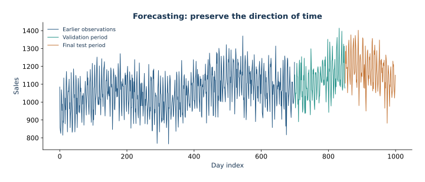
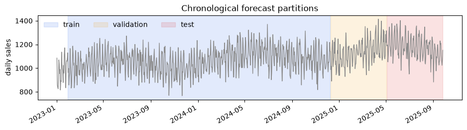
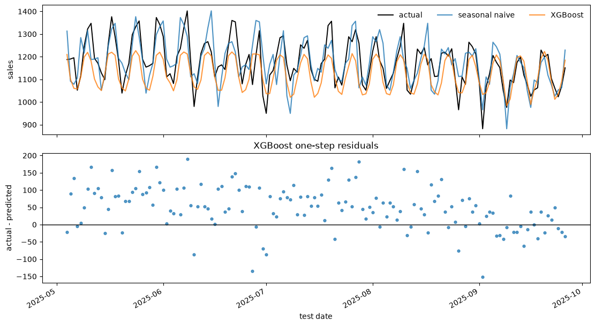

Lección 07 — Pronóstico de series temporales: información, orígenes y evaluación honesta
Pronosticamos las ventas diarias sintéticas a partir de sus valores pasados y de datos del calendario conocidos de antemano. El objeto matemático central es la esperanza condicional dada la información disponible en el origen del pronóstico. Compararemos una regla estacional ingenua con un modelo XGBoost y evaluaremos ambos mediante pronósticos sucesivos a un paso.

La serie sintética proporcionada, con límites ilustrativos 70/15/15 sobre las filas originales. El cuaderno divide las filas con rezagos utilizables, por lo que sus límites exactos son distintos.
Traducir el conjunto de información a una fila de pronóstico
Pronosticamos predict las ventas de la fecha $t$ después de observar la fecha $t-1$. Por ejemplo, para predict pronosticar el 9 de enero, una vez cerrado el día 8 de enero, lag_1 es la venta del 8 de enero y lag_7 es la venta del 2 de enero. El promedio de siete días abarca del 2 al 8 de enero. Las ventas del 9 de enero deben aparecer solo como objetivo, nunca entre las variables predictoras.
shift(1) desplaza cada valor observado a la fila siguiente y alinea la observación de ayer con el objetivo de hoy. Una rolling media móvil que no aplique este desplazamiento shift incluiría el objetivo de hoy y filtraría información futura en las entradas. Los valores del calendario, como el día de la semana del 9 de enero, se conocen de antemano.
Durante la rolling evaluación de prueba a un paso, las ventas reales de un día de prueba, una vez observadas, quedan disponibles para construir los rezagos del día siguiente. Los parámetros del modelo permanecen fijos. Pronosticar un mes futuro entero antes de observar cualquiera de sus días es un problema distinto. Además, la sección de ventana expansiva vuelve a ajustar los modelos en varios orígenes de desarrollo; conviene seguir con cuidado sus particiones de entrada y salida.
1. La esperanza condicional es el pronóstico óptimo bajo error cuadrático
Sea $(\Omega,\mathcal A,\mathbb P)$ un espacio de probabilidad. Supongamos que $Y_{t+h}\in L^2(\Omega,\mathcal A,\mathbb P)$ y que $Y_{t+h}$ es el valor que se desea pronosticar en el origen $t$ y horizonte $h$. La información disponible en ese origen es una σ-álgebra $\mathcal F_t\subseteq\mathcal A$. Para cualquier $g\in L^2(\Omega,\mathcal A,\mathbb P)$ que sea medible respecto de $\mathcal F_t$, condicionamos en la información disponible:
$$\mathbb E[(Y_{t+h}-g)^2\mid\mathcal F_t] =\operatorname{Var}(Y_{t+h}\mid\mathcal F_t) +\left(g-\mathbb E[Y_{t+h}\mid\mathcal F_t]\right)^2.$$
Por tanto, el pronóstico de riesgo mínimo es la media condicional $\hat Y_{t+h\mid t}=\mathbb E[Y_{t+h}\mid\mathcal F_t]$ (salvo igualdad casi segura). Un pronóstico es una función de lo que se conoce en su origen. Si una variable predictora usa un valor observado después de $t$, no es medible respecto de $\mathcal F_t$ y no describe un pronóstico que se pudiera haber emitido entonces.
Con pérdida de error absoluto, la mediana condicional es óptima. Informaremos MAE y RMSE: ambas métricas se interpretan en las unidades de ventas, y RMSE asigna más peso a los errores grandes. No usamos MAPE porque sus errores porcentuales se comportan mal cuando la respuesta se acerca a cero.
2. En una serie temporal, la información tiene un orden
La filtración $\mathcal F_0\subseteq\mathcal F_1\subseteq\cdots$ representa la información que se acumula con el tiempo. Aquí incluye las ventas pasadas observadas $Y_s$ para $s\leq t$ y los valores del calendario conocidos para fechas futuras. No incluye ventas futuras.
Una autorregresión de orden $p$ puede usar una ventana de rezagos:
$$\hat Y_{t+1\mid t}=f(Y_t,Y_{t-1},\ldots,Y_{t-p+1},\text{calendar}_{t+1}).$$
Un rezago es un valor seleccionado según su distancia temporal respecto del objetivo. Una ventana reúne valores pasados para resumirlos; por ejemplo, un resumen calculado con rolling que calcula el promedio. La regla estacional ingenua de siete días es $\hat Y_{t+1\mid t}=Y_{t-6}$, el valor observado más reciente del mismo día de la semana. Es una referencia transparente, no un modelo ajustado.
El horizonte y la brecha responden a preguntas distintas
El horizonte $h$ indica cuán lejos en el futuro está el objetivo respecto del origen del pronóstico. Una brecha es un bloque de observaciones que se omite entre el último objetivo de entrenamiento y el primer objetivo de validación o prueba. Son conceptos distintos. Esta lección usa horizonte $h=1$ y bloques cronológicos contiguos, así que la brecha entre particiones es cero. Para un objetivo a horizonte $h$, las variables disponibles en el origen $t$ predict se usan para pronosticar $Y_{t+h}$; el conjunto de información sigue terminando en $t$. Si la aplicación no recibe etiquetas recientes a tiempo o las ventanas objetivo se solapan, elija una brecha o una regla de purga que refleje ese retraso y la definición del objetivo.
| Diseño de validación | Qué representa | Decisión principal |
|---|---|---|
| Una única partición cronológica | Un periodo futuro de despliegue | Un único corte temporal; evaluación final sencilla |
| Ventana expansiva | Reajuste a medida que crece el historial | Conservar todas las observaciones anteriores; aumenta el coste de entrenamiento |
| Ventana móvil | Reajuste con el historial reciente solamente | Fijar la amplitud del historial para adaptarse al cambio; se descartan los datos más antiguos |
| Brecha o purga | Etiquetas retrasadas u objetivos con ventanas solapadas | Excluir las filas limítrofes cuyas etiquetas todavía no se conocerían |
La partición aleatoria por filas rompe el orden de la información. La evaluación cronológica estima el desempeño ante datos futuros, pero las fechas y la frecuencia de actualización deben corresponder al uso previsto.
3. Por qué una partición aleatoria iid responde a la pregunta equivocada
Una partición aleatoria suele intercalar filas de entrenamiento y prueba. Fechas consecutivas pueden tener historiales casi duplicados, y el modelo puede entrenarse con fechas posteriores a una fecha de prueba. Así se estima el desempeño en filas ocultas al azar bajo un supuesto de intercambiabilidad. El pronóstico, en cambio, se refiere a fechas futuras a partir de información anterior; por eso reservamos bloques futuros contiguos y mantenemos su orden.
Nuestro escenario principal es explícito: en cada fecha de prueba $t$, emitimos un pronóstico a un día y luego observamos $Y_t$ antes de emitir el siguiente. Los parámetros del modelo quedan fijos tras el entrenamiento, pero los rezagos se actualizan con cada valor real que llega. Esta es una evaluación con origen móvil y horizonte de un paso. Un pronóstico a 30 días desde un origen fijo tendría que alimentar recursivamente sus propios valores pronosticados en los rezagos futuros (o usar un modelo directo específico para cada horizonte); no puede usar ventas reales de esos 30 días.
4. Generar variables predictoras sin mirar hacia adelante
Para las siete observaciones completas anteriores, la media móvil de la fila cuyo objetivo corresponde a $t$ es
$$\overline Y_{t,7}=\frac{1}{7}\sum_{j=1}^{7}Y_{t-j}.$$
Este resumen representa el nivel local; lag_7 el rezago de siete días conserva por separado la observación del mismo día de la semana.
Para la fecha objetivo $t$, shift(k) alinea la observación $Y_{t-k}$ con la fila $t$. Una ventana móvil resume filas anteriores; por sí sola, la operación no sabe qué valores estaban disponibles en el origen del pronóstico. Primero desplace la serie objetivo y después calcule la ventana. Por ejemplo, sales.shift(1).rolling(window=7, min_periods=7).mean() usa las siete filas que terminan en $t-1$ y exige que estén presentes las siete observaciones. Sin shift(1), el objetivo actual podría formar parte de su propia variable predictora.
Una ventana entera como window=7 significa siete observaciones. Una ventana de duración temporal, como 7D sobre un índice de fechas, representa un intervalo de siete días; si faltan fechas, ambas definiciones incluyen conjuntos distintos de observaciones. min_periods controla cuántos valores no faltantes se necesitan para obtener un resultado. Exigir una ventana completa evita que el tamaño muestral del resumen cambie silenciosamente entre fechas. Un mínimo menor conserva las filas iniciales, pero hace que sus promedios no sean tan comparables. Centrar la ventana no es adecuado para pronosticar, pues puede incluir fechas posteriores al origen.
| Opción de pandas | Significado en esta lección | Cuándo cambiarla |
|---|---|---|
shift(k) |
Colocar en la fila del objetivo de hoy el valor de hace $k$ filas | Cambiar k para elegir otro rezago; primero confirme la separación entre filas |
rolling(window=7) |
Resumir las siete observaciones anteriores | Usar una ventana de duración para medir tiempo transcurrido en el calendario |
min_periods=7 |
Devolver un valor solo cuando haya siete observaciones | Reducirlo únicamente si la definición de la variable admite ventanas parciales |
mean() |
Promediar los valores disponibles dentro de la ventana | Usar sum(), std(), min(), u otra operación de resumen justificada |
Las variables del calendario son funciones deterministas de la fecha objetivo y se conocen de antemano. Este conjunto es una simulación didáctica diaria con semilla fija; el generador está documentado en sales_dataset.md. El localizador de datos busca en esta carpeta y en sus directorios superiores, tanto desde la raíz del repositorio como desde el directorio de la lección.
Referencias de pandas: Series.shift y Series.rolling documentan la alineación y las opciones de ventana.
Cargar y comprobar el eje temporal
La siguiente celda localiza el archivo CSV incluido, interpreta date como marca temporal, ordena las filas y comprueba que las fechas sean únicas y crecientes. Estas comprobaciones protegen la alineación: si la serie no está ordenada, el desplazamiento asociaría observaciones incorrectas con cada objetivo.
from pathlib import Path
import numpy as np
import pandas as pd
import matplotlib.pyplot as plt
def find_data_file(filename):
"""Search this directory and its parents for a file under data/."""
for directory in (Path.cwd(), *Path.cwd().parents):
candidate = directory / "data" / filename
if candidate.exists():
return candidate
raise FileNotFoundError(f"Could not find data/{filename} from {Path.cwd()}")
sales_data = pd.read_csv(find_data_file("daily_sales.csv"), parse_dates=["date"])
sales_data = sales_data.sort_values("date").reset_index(drop=True)
assert sales_data["date"].is_monotonic_increasing and sales_data["date"].is_unique
sales_data.head()
4. Generar variables predictoras sin mirar hacia adelante · resultado calculado
date sales 0 2023-01-01 1084.81 1 2023-01-02 857.27 2 2023-01-03 837.36 3 2023-01-04 824.92 4 2023-01-05 893.70
Ver cómo el desplazamiento y min_periods cambian las filas
Este ejemplo pequeño permite ver la alineación antes de aplicarla al conjunto completo. Cada resumen desplazado usa solo observaciones anteriores. Con min_periods=1, los primeros promedios se calculan con historiales más cortos; con min_periods=3, solo aparecen después de reunir tres observaciones.
toy = pd.Series([10.0, 12.0, 11.0, 15.0, 14.0],
index=pd.date_range("2025-01-01", periods=5, freq="D"), name="sales")
toy_features = pd.DataFrame({
"target_sales": toy,
"lag_1": toy.shift(1),
"mean_3_full": toy.shift(1).rolling(window=3, min_periods=3).mean(),
"mean_3_partial": toy.shift(1).rolling(window=3, min_periods=1).mean(),
})
toy_features
4. Generar variables predictoras sin mirar hacia adelante · resultado calculado
target_sales lag_1 mean_3_full mean_3_partial 2025-01-01 10.0 NaN NaN NaN 2025-01-02 12.0 10.0 NaN 10.000000 2025-01-03 11.0 12.0 NaN 11.000000 2025-01-04 15.0 11.0 11.000000 11.000000 2025-01-05 14.0 15.0 12.666667 12.666667
def make_forecasting_features(data):
"""Build rolling one-step predictors using only observations before each date."""
frame = data[["date", "sales"]].copy().sort_values("date").reset_index(drop=True)
day = frame["date"].dt.dayofweek.to_numpy()
frame["weekday_sin"] = np.sin(2 * np.pi * day / 7)
frame["weekday_cos"] = np.cos(2 * np.pi * day / 7)
frame["year_day_sin"] = np.sin(2 * np.pi * frame["date"].dt.dayofyear / 365.25)
frame["year_day_cos"] = np.cos(2 * np.pi * frame["date"].dt.dayofyear / 365.25)
for lag in (1, 2, 7, 14, 28):
frame[f"lag_{lag}"] = frame["sales"].shift(lag)
frame["mean_7_before"] = frame["sales"].shift(1).rolling(7).mean()
frame["mean_28_before"] = frame["sales"].shift(1).rolling(28).mean()
return frame.dropna().reset_index(drop=True)
feature_data = make_forecasting_features(sales_data)
feature_columns = [
column for column in feature_data.columns if column not in ("date", "sales")
]
feature_data[["date", "sales", "lag_1", "lag_7", "mean_7_before", "weekday_sin"]].head()
4. Generar variables predictoras sin mirar hacia adelante · resultado calculado
date sales lag_1 lag_7 mean_7_before weekday_sin 0 2023-01-29 1128.91 1090.04 1068.30 1010.350000 -0.781831 1 2023-01-30 962.44 1128.91 929.07 1019.008571 0.000000 2 2023-01-31 997.18 962.44 832.95 1023.775714 0.781831 3 2023-02-01 857.27 997.18 1031.74 1047.237143 0.974928 4 2023-02-02 927.99 857.27 1062.29 1022.312857 0.433884
Construir la matriz de variables predictoras
La función primero ordena y reinicia el índice de filas; luego calcula codificaciones sinusoidales y cosenoidales del calendario, de modo que los valores cíclicos se conectan suavemente en los límites del año y de la semana. Cada shift(k) aporta un rezago. Las medias móviles comienzan con shift(1), así que excluyen la fecha objetivo. dropna() elimina las filas sin el historial completo de 28 observaciones que exige el mayor rezago y la ventana móvil de mayor amplitud. rolling ventana. feature_columns define después la matriz de entrada X; sales sigue siendo la variable objetivo y date se conserva para el análisis de resultados.
Cinco filas concretas de pronóstico
El origen es la última fecha observada, un día antes de la fecha objetivo. Cada fila de abajo indica la observación más reciente disponible y el rezago de siete días. Se muestran las ventas objetivo para comprobar la alineación una vez transcurrido el día, pero no forman parte de las variables predictoras.
worked_dates = feature_data.head(5).copy()
worked_dates.insert(0, "origin_date", worked_dates.date - pd.Timedelta(days=1))
worked_dates.insert(2, "lag_7_date", worked_dates.date - pd.Timedelta(days=7))
display(worked_dates[["origin_date", "date", "lag_7_date", "lag_1", "lag_7", "mean_7_before", "sales"]])
4. Generar variables predictoras sin mirar hacia adelante · resultado calculado
origin_date date lag_7_date lag_1 lag_7 mean_7_before sales 0 2023-01-28 2023-01-29 2023-01-22 1090.04 1068.30 1010.350000 1128.91 1 2023-01-29 2023-01-30 2023-01-23 1128.91 929.07 1019.008571 962.44 2 2023-01-30 2023-01-31 2023-01-24 962.44 832.95 1023.775714 997.18 3 2023-01-31 2023-02-01 2023-01-25 997.18 1031.74 1047.237143 857.27 4 2023-02-01 2023-02-02 2023-01-26 857.27 1062.29 1022.312857 927.99
Compruebe el límite: la primera fila completa dispone de 28 observaciones anteriores. lag_1 es la venta observada el día anterior, mientras que mean_7_before excluye el objetivo de su propia fila. Los valores del calendario se conocen para la fecha del pronóstico.
first_row = feature_data.iloc[0]
assert np.isclose(first_row["lag_1"], sales_data.loc[27, "sales"])
assert np.isclose(first_row["mean_7_before"], sales_data.loc[21:27, "sales"].mean())
assert len(feature_data) == len(sales_data) - 28
print("Feature boundary checks passed:", first_row["date"].date())
4. Generar variables predictoras sin mirar hacia adelante · resultado calculado
Feature boundary checks passed: 2023-01-29
Una prueba útil de fuga de información consiste en alterar los resultados posteriores a un origen y comprobar que las variables de un origen anterior no cambien.
origin_raw_index = 200
origin_feature_index = origin_raw_index - 28
future_perturbation = sales_data.copy()
future_perturbation.loc[origin_raw_index :, "sales"] += 10000
perturbed_features = make_forecasting_features(future_perturbation)
predictor_columns = [
column for column in feature_data.columns if column not in ("date", "sales")
]
np.testing.assert_allclose(
feature_data.loc[origin_feature_index, predictor_columns].to_numpy(dtype=float),
perturbed_features.loc[origin_feature_index, predictor_columns].to_numpy(
dtype=float
),
)
print("Changing the target at the forecast date and all future targets leaves its predictors unchanged.")
4. Generar variables predictoras sin mirar hacia adelante · resultado calculado
Changing the target at the forecast date and all future targets leaves its predictors unchanged.
Esta comprobación modifica el objetivo de la fecha elegida para el pronóstico y los de todas las fechas posteriores. Las variables de ese origen deben mantenerse iguales, pues sus entradas terminan el día anterior. Es una comprobación puntual de la alineación temporal; no demuestra que toda transformación posible esté libre de fuga de información.
5. Límites cronológicos para entrenamiento, validación y prueba
Dividimos las filas útiles en orden cronológico: el 70 % inicial para entrenamiento, el 15 % siguiente para validación y el 15 % final para la prueba definitiva. Estos porcentajes son ilustrativos; las fechas y el protocolo de pronóstico importan más que usar una proporción conocida. La validación selecciona el número de iteraciones de boosting mediante parada temprana. El bloque de prueba queda intacto hasta calcular la puntuación final.
En el esquema rolling , la evaluación a un paso permite que una fila posterior del bloque de prueba use como rezago las ventas reales de una fecha de prueba anterior: ese valor ya se habría observado en el origen posterior. Los parámetros del modelo permanecen fijos y los objetivos de prueba nunca participan en el ajuste ni en la selección del modelo. Si las etiquetas llegan con retraso o los objetivos de varios pasos se solapan con el límite de validación, añada una brecha o purga que corresponda a ese retraso operativo. Una partición cronológica impide entrenar con objetivos posteriores, pero no garantiza por sí sola que todas las variables estuvieran disponibles en un despliegue concreto.
n_rows = len(feature_data)
train_end = int(0.70 * n_rows)
validation_end = int(0.85 * n_rows)
train_data = feature_data.iloc[:train_end].copy()
validation_data = feature_data.iloc[train_end:validation_end].copy()
test_data = feature_data.iloc[validation_end:].copy()
boundary_table = pd.DataFrame(
{
"partition": ["train", "validation", "test"],
"rows": [len(train_data), len(validation_data), len(test_data)],
"first_date": [
part["date"].min().date()
for part in (train_data, validation_data, test_data)
],
"last_date": [
part["date"].max().date()
for part in (train_data, validation_data, test_data)
],
}
)
boundary_table
5. Límites cronológicos para entrenamiento, validación y prueba · resultado calculado
partition rows first_date last_date 0 train 680 2023-01-29 2024-12-08 1 validation 146 2024-12-09 2025-05-03 2 test 146 2025-05-04 2025-09-26
iloc usa posiciones de fila, por lo que las proporciones conservan el orden cronológico. La tabla de límites muestra los intervalos de fechas y el número de observaciones; revísela antes de ajustar el modelo. Como se eliminaron las filas iniciales para construir las variables, los límites son porcentajes de las filas utilizables, no del CSV original.
fig, ax = plt.subplots(figsize=(11, 2.5))
ax.plot(sales_data["date"], sales_data["sales"], color="0.55", lw=1)
partitions = (
(train_data, "#2563eb", "train"),
(validation_data, "#f59e0b", "validation"),
(test_data, "#dc2626", "test"),
)
for part, color, label in partitions:
ax.axvspan(
part["date"].min(), part["date"].max(), color=color, alpha=0.13, label=label
)
ax.set(title="Chronological forecast partitions", ylabel="daily sales")
ax.legend(ncol=3, frameon=False)
fig.autofmt_xdate()
plt.show()

El gráfico sombreado superpone esas particiones exactas de filas con variables predictoras sobre la serie original. Permite comprobar visualmente que entrenamiento precede a validación y validación precede a prueba.
6. Backtest de desarrollo con ventana expansiva
Un solo límite puede hacer que el resultado dependa de una temporada especialmente fácil o difícil. Podemos examinar varios orígenes de pronóstico anteriores al límite de la prueba definitiva. En cada origen, ampliamos el historial de entrenamiento, reservamos el bloque contiguo siguiente como validación interna para la parada temprana y puntuamos el bloque contiguo posterior con pronósticos sucesivos a un paso. Este backtest no incluye filas de la prueba definitiva. Como el modelo se reajusta en cada origen, responde a una pregunta de despliegue distinta de la partición principal, que mantiene fijo el modelo.
# Optional extension: implementation is in src/course_ml/forecasting.py.
# Read the main chronological experiment first if you are new to forecasting.
import sys
sys.path.insert(0, str(find_data_file("daily_sales.csv").parent.parent / "src"))
from course_ml.forecasting import rolling_development_backtest
# Development ends where the final test begins; folds never inspect the final test block.
development_folds = rolling_development_backtest(
feature_data,
feature_columns,
development_end=validation_end,
initial_train_size=350,
validation_size=70,
test_size=70,
)
development_folds
6. Backtest de desarrollo con ventana expansiva · resultado calculado
fold fit_through validation_through evaluation_start evaluation_end \ 0 1 2024-01-13 2024-03-23 2024-03-24 2024-06-01 1 2 2024-03-23 2024-06-01 2024-06-02 2024-08-10 2 3 2024-06-01 2024-08-10 2024-08-11 2024-10-19 3 4 2024-08-10 2024-10-19 2024-10-20 2024-12-28 4 5 2024-10-19 2024-12-28 2024-12-29 2025-03-08 selected_rounds MAE RMSE seasonal_naive_MAE \ 0 85 78.340047 93.297652 71.788429 1 68 77.203933 92.319095 75.685429 2 163 59.924720 73.510938 71.940286 3 61 61.097561 77.437779 85.038000 4 129 44.793420 57.371597 58.131143 seasonal_naive_RMSE 0 86.434215 1 88.781853 2 90.732181 3 110.121673 4 73.936372
Este código opcional importa el rolling ayudante de desarrollo. En cada pliegue, el prefijo de entrenamiento crece; se elige el número de iteraciones en el siguiente bloque de validación y luego se mide el bloque posterior. Así se observa si el desempeño cambia entre orígenes de desarrollo; no sustituye la prueba final, que permanece intacta.
El backtest expansivo es un diagnóstico durante el desarrollo. Los bloques de validación de cada pliegue eligen el número de iteraciones; los bloques de evaluación comparan orígenes cronológicos dentro de los datos de desarrollo. La prueba final sigue siendo un último bloque independiente. Ninguno de estos backtests cambia el escenario principal: todas las puntuaciones anteriores corresponden a pronósticos sucesivos a un paso, con actualización mediante valores reales observados.
7. Elegir la complejidad del modelo solo con validación
XGBoost añade árboles de forma secuencial para reducir la función objetivo de entrenamiento. Aquí se minimiza el error cuadrático, de modo que cada árbol nuevo intenta corregir el patrón de residuos actual. La profundidad, las restricciones de las hojas, el muestreo y la regularización limitan el nivel de detalle con el que el conjunto de árboles se ajusta a esta muestra sintética pequeña. Los valores siguientes son una configuración inicial conservadora, no valores universales.
| Parámetro | Qué controla | Por qué se usa este valor en la lección |
|---|---|---|
objective="reg:squarederror" |
Pérdida de entrenamiento para una respuesta continua | Corresponde al ajuste por error cuadrático y al seguimiento de RMSE |
n_estimators=500 |
Límite superior del número de iteraciones de boosting | Da margen a la parada temprana para seleccionar un punto útil |
learning_rate=0.035 |
Contracción aplicada a cada árbol añadido | Los pasos pequeños suelen requerir más iteraciones y pueden regularizar el ajuste |
max_depth=3 |
Profundidad máxima de los árboles | Limita las interacciones y el número de hojas en un conjunto de datos pequeño |
min_child_weight=5 |
Masa mínima del hessiano en un nodo hijo | Desalienta hojas respaldadas por muy pocos datos |
subsample=0.9 |
Fracción de filas muestreadas para cada árbol | Añade una regularización moderada mediante muestreo |
colsample_bytree=0.9 |
Fracción de variables predictoras muestreadas para cada árbol | Añade una regularización moderada sobre las variables |
reg_lambda=5.0 |
Penalización L2 sobre los pesos de las hojas | Contrae las actualizaciones de las hojas hacia cero |
early_stopping_rounds=25 |
Detener cuando RMSE de validación deje de mejorar | Usa la validación para seleccionar el número efectivo de árboles |
eval_metric="rmse" |
Métrica observada para la parada temprana | Alinea el criterio de parada con el énfasis en el error cuadrático |
random_state, n_jobs |
Reproducibilidad del muestreo y número de procesos paralelos | Hace que esta ejecución pequeña sea reproducible y acotada |
Para una hoja $j$, sean $G_j=\sum_{i\in j}g_i$ y $H_j=\sum_{i\in j}h_i$ las sumas de las primeras y segundas derivadas de la pérdida. Con penalización L2 de hojas $\lambda$, la aproximación de segundo orden da el peso óptimo de la hoja $$w_j^*=-\frac{G_j}{H_j+\lambda}.$$ La tasa de aprendizaje escala la contribución del árbol al incorporarlo al conjunto. Esto explica por qué la regularización y una tasa de aprendizaje menor reducen las actualizaciones, mientras que la profundidad y las restricciones de nodos hijos limitan las particiones que pueden recibir actualizaciones independientes. Consulte la Referencia de parámetros de XGBoost y la derivación del boosting de la lección.
La interfaz de scikit-learn admite early_stopping_rounds al construir el estimador en la versión instalada de XGBoost. fit recibe solo las filas de entrenamiento y el bloque cronológico de validación. El estimador queda ajustado con la partición de entrenamiento; la validación selecciona la iteración de parada, pero no se incorpora al ajuste. Nunca use el bloque de prueba definitivo para ajustar estas decisiones. Una referencia estacional sencilla aún puede ganar: la recurrencia semanal quizá ya explique gran parte de la estructura predecible, la muestra es pequeña o los árboles pueden no extrapolar bien una tendencia del nivel. Informe ese resultado e investigue con los datos de desarrollo.
La API de XGBoost compatible con scikit-learn documenta los argumentos del estimador y su comportamiento durante el ajuste.
from xgboost import XGBRegressor
from sklearn.metrics import mean_absolute_error, mean_squared_error
X_train = train_data[feature_columns]
y_train = train_data["sales"]
X_validation = validation_data[feature_columns]
y_validation = validation_data["sales"]
model = XGBRegressor(
objective="reg:squarederror",
n_estimators=500,
learning_rate=0.035,
max_depth=3,
min_child_weight=5,
subsample=0.9,
colsample_bytree=0.9,
reg_lambda=5.0,
early_stopping_rounds=25,
eval_metric="rmse",
random_state=17,
n_jobs=2,
)
model.fit(X_train, y_train, eval_set=[(X_validation, y_validation)], verbose=False)
selected_rounds = model.best_iteration + 1
selected_rounds
7. Elegir la complejidad del modelo solo con validación · resultado calculado
128
El código pasa columnas con nombre y valores objetivo a fit; eval_set se usa únicamente para observar RMSE. best_iteration + 1 convierte el índice de XGBoost, que comienza en cero, en un número de árboles. El modelo ajustado predict que asigna luego una estimación de ventas a cada fila de variables predictoras.
8. Evaluación de prueba con pronósticos sucesivos a un paso
La regla estacional ingenua de siete días y XGBoost reciben los mismos orígenes y objetivos de prueba. Para cada origen, el constructor de variables usa solo ventas pasadas, incluidas las ventas reales que ya estarían disponibles en este escenario de actualización sucesiva. MAE y RMSE se informan en unidades de ventas sintéticas. Una mejora negativa frente a la referencia indica que el modelo aprendido obtuvo un error mayor en esa métrica.
test_prediction = model.predict(test_data[feature_columns])
seasonal_prediction = test_data["lag_7"].to_numpy()
y_test = test_data["sales"].to_numpy()
def score_predictions(actual, predicted):
return {
"MAE": mean_absolute_error(actual, predicted),
"RMSE": mean_squared_error(actual, predicted) ** 0.5,
}
score_table = pd.DataFrame(
{
"seasonal naive": score_predictions(y_test, seasonal_prediction),
"XGBoost": score_predictions(y_test, test_prediction),
}
).T
score_table["MAE improvement vs naive"] = (
score_table.loc["seasonal naive", "MAE"] - score_table["MAE"]
)
score_table["RMSE improvement vs naive"] = (
score_table.loc["seasonal naive", "RMSE"] - score_table["RMSE"]
)
score_table
8. Evaluación de prueba con pronósticos sucesivos a un paso · resultado calculado
MAE RMSE MAE improvement vs naive \
seasonal naive 61.941575 78.95166 0.000000
XGBoost 65.324087 79.41873 -3.382512
RMSE improvement vs naive
seasonal naive 0.00000
XGBoost -0.46707Ambas predicciones y los objetivos corresponden a las mismas filas de la prueba final. MAE es el error absoluto promedio; RMSE es la raíz del error cuadrático medio y, por tanto, asigna más peso a los errores grandes. Una mejora positiva significa menor error que con la regla estacional; una mejora negativa favorece la referencia.
fig, axes = plt.subplots(2, 1, figsize=(11, 6), sharex=True, layout="constrained")
axes[0].plot(test_data["date"], y_test, label="actual", color="black", lw=1.4)
axes[0].plot(test_data["date"], seasonal_prediction, label="seasonal naive", alpha=0.8)
axes[0].plot(test_data["date"], test_prediction, label="XGBoost", alpha=0.8)
axes[0].set_ylabel("sales")
axes[0].legend(ncol=3, frameon=False)
residual = y_test - test_prediction
axes[1].scatter(test_data["date"], residual, s=12, alpha=0.75)
axes[1].axhline(0, color="black", lw=1)
axes[1].set(
ylabel="actual - predicted", xlabel="test date", title="XGBoost one-step residuals"
)
fig.autofmt_xdate()
plt.show()

Límites e interpretación
Las series sintéticas permiten ver el orden temporal y las reglas contra la fuga de información, pero no describen el proceso de demanda de un comercio real. La referencia estacional ingenua usa un periodo semanal elegido por construcción. Las codificaciones del calendario suponen que se conoce la fecha del pronóstico. MAE y RMSE resumen errores, pero ocultan fallos en fechas concretas; examine la cronología y los residuos. Una evaluación operativa útil debe reproducir el horizonte, la frecuencia de actualización y la disponibilidad de covariables del despliegue previsto.
Los conjuntos de árboles predict producen predicciones a partir de valores por hoja y no extrapolan automáticamente una tendencia lineal. Si el nivel deriva, la regla estacional ingenua puede ser competitiva o incluso mejor. Que gane la referencia es un resultado informativo: repórtelo e investigue con datos de desarrollo, sin ajustar el modelo contra la prueba final.